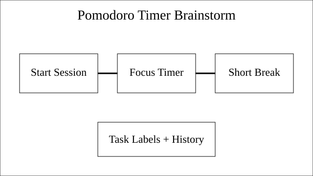

Product Goal
Choose a clear, approachable timer experience for students.
Sprint planning notes
This note is hidden for layout testing.
Everyone joined on time and the group agreed that a shared timer workflow is the highest-priority feature.
These were the priorities chosen for the team's first sprint.
Choose a clear, approachable timer experience for students.
Start, pause, reset, and short-break support were all approved.
Research, docs, and wireframes were divided across the group.
The team wants a small prototype ready before the next standup.
Last meeting's open item was whether we should build for desktop first or mobile first. That decision is still pending because we need one more round of user research.
The group proposed a pomodoro workflow with task labels, short breaks, and a simple session history. One suggestion was to keep an icebox list for stretch features.
One concern was balancing a clean interface with useful reporting. Another comment was that the first version should avoid overcommitting to analytics before the core timer experience feels solid.
For inspiration, the team reviewed MDN's HTML documentation and agreed to keep the project structure easy to read.

This form is intentionally non-functional for the lab, but it includes the required HTML form controls.